On peut cliquer sur les images pour générer des alertes selon la catégorie représentée.
Ci-dessous, les images représentent des Pokémons ou des choses qui ne sont pas des Pokémons.
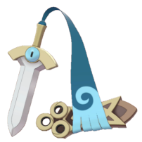
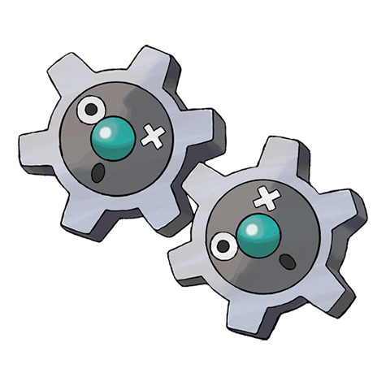
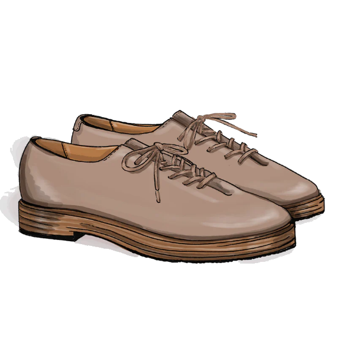
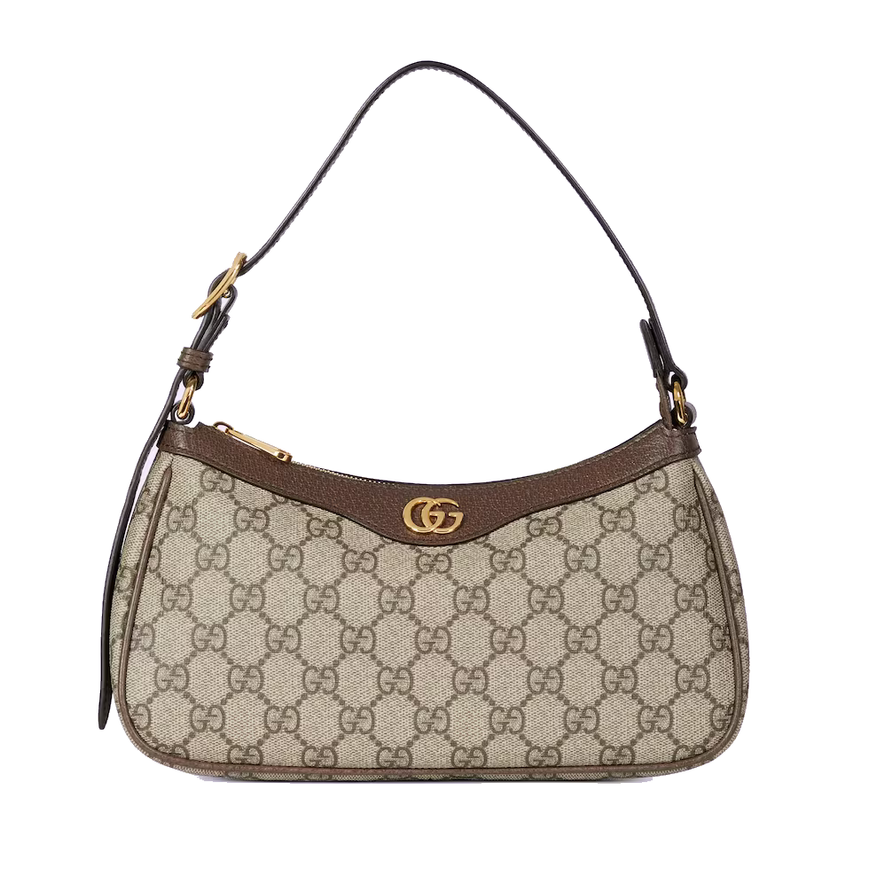
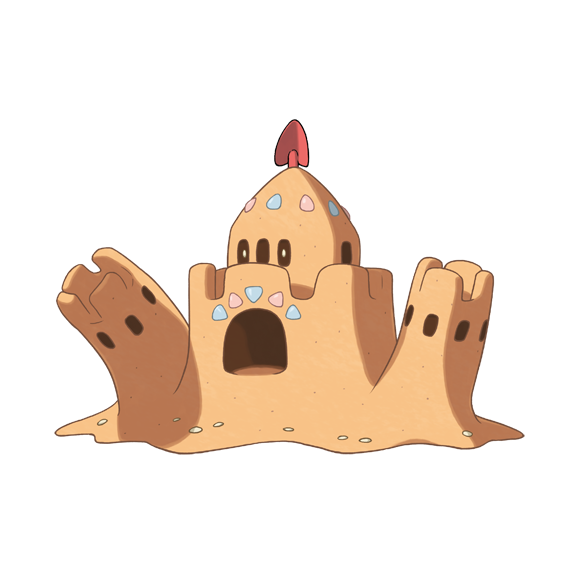
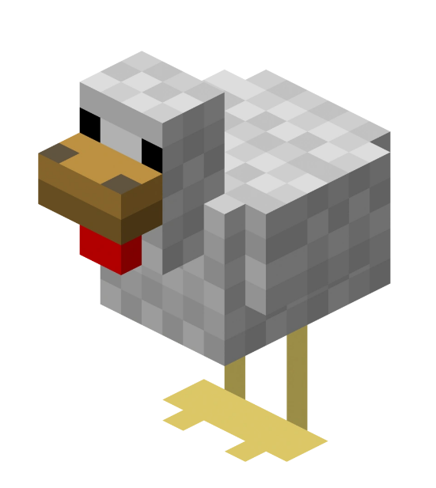
Ci-dessous, il y a des personnages de Stardew Valley. Certains peuvent être mariés dans le jeu et d'autres non.
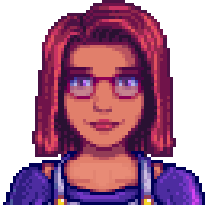
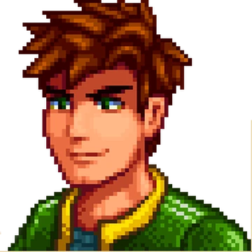
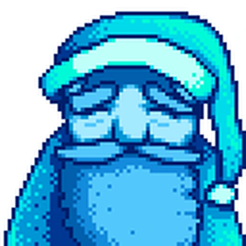
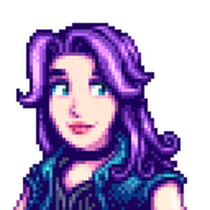
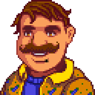
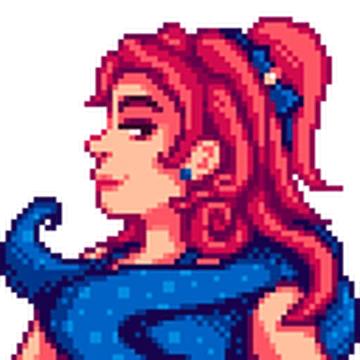